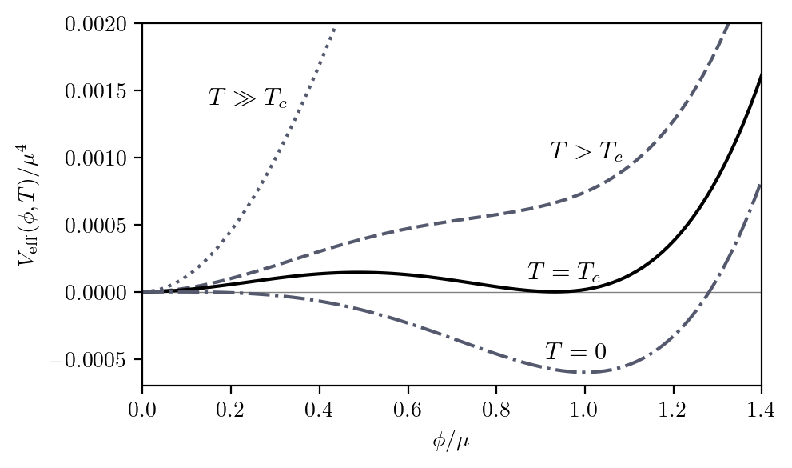
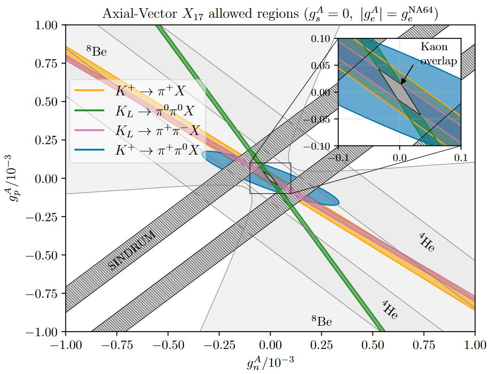
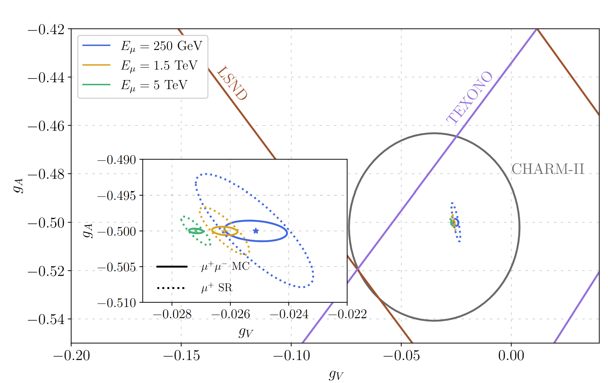
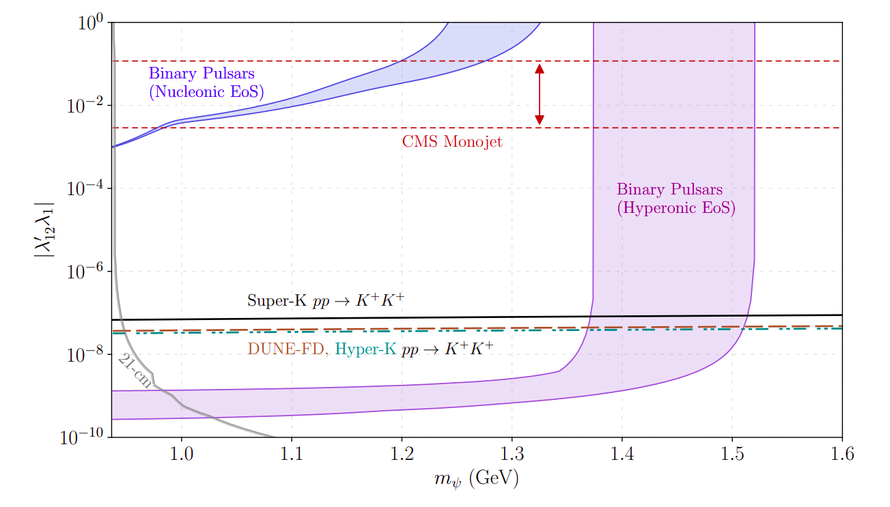
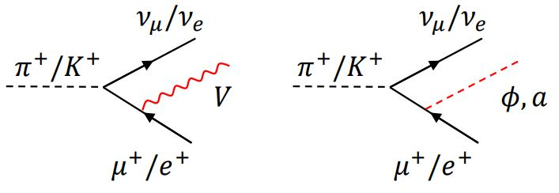
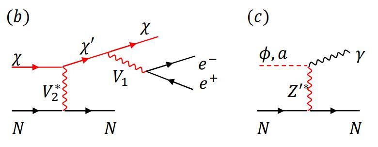
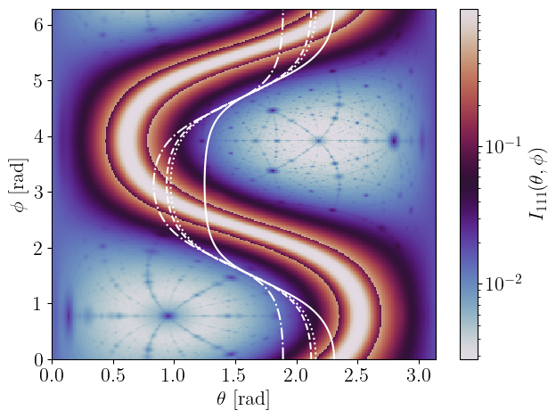
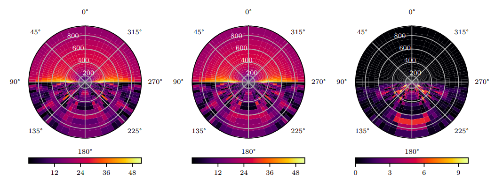

Neutrino Theory Network Fellow, UC Irvine
I work on particle phenomenology in a number of areas related to questions about dark matter, axions, and the nature of the neutrino masses. I enjoy collaborating with many experimentalists and theorists to discover new fundamental properties of our universe and its particle content.
I started in physics at UC Santa Cruz, where I got my bachelors in physics and math in 2015. I contracted at Google X working in software quality for the self-driving car (now Waymo) for a few years. I then did my doctorate at Texas A&M from 2017-2023, where I worked briefly on CMS and then on particle theory and phenomenology for the remainder. I collaborated there with experimental physicists on reactor experiments like MINER, accelerator experiments like COHERENT, IsoDAR, and CCM, and future neutrino experiments like DUNE, and figured out how to test theories of physics beyond the Standard Model at those experiments (and propose a few new models myself). Now I enjoy working on neutrino physics at future muon colliders, first-order phase transitions in the early universe, chiral perturbation theory and nuclear physics, and racking my brain over the cosmic neutrino background.
First-order phase transitions in the early Universe can produce both gravitational waves and primordial black holes when shrinking false-vacuum domains gravitationally collapse. We develop a junction-condition formalism that tracks Schwarzschild collapse dynamically, without relying on post-inflationary overdensity thresholds, and map regions of phase-transition parameter space that yield observable GWs, PBHs, or both. In polynomial and classically conformal scalar benchmarks, vacuum expectation values of order 1–100 MeV leave the largest room for these multi-messenger signals, which upcoming GW observatories, Hawking-radiation searches, and gravitational-lensing surveys can test.

Rare three- and four-body kaon decays probe light vector and axial-vector bosons coupled to nonconserved quark currents. Searches for KL→π0π0(X→e+e−) set O(10−5) limits on X couplings to light quarks, while charged-kaon modes constrain complementary combinations of u, d, and s quark couplings at the O(10−4) level. Double X emission in K→πXX decays adds further sensitivity through a (mK/mX)² enhancement, sharpening the tension between spin-1 interpretations of the ATOMKI anomaly and existing meson decay data.

A kilometer-sized, TeV-scale muon storage ring or collider can do many things for fundamental physics from the nature of the Higgs sector to probing beyond the electroweak scale. The fact that muons decay also means that such a machine is a ultra precise neutrino factory. In this work we sought to clarify the physics potential of such neutrino factories to probe electroweak observables with neutrino-electron elastic scattering (EvES). By proposing a large-scale neutrino detector lying in the plane of the muon ring, shaped like a giant hockey puck to catch the pinpoint-like neutrino beams that rotate with the muon bunches like a neutrino lighthouse, we found that the large statistics available can be used to make this an electroweak precision test of the neutrino sector. In addition, we carved out a way to demonstrate the renormalization group running of the weak mixing angle which could be seen within a single dataset from a single experimental configuration of the beam.

We study a toy model of Baryogenesis with color-charged scalars and a Majorana fermion and see how binary pulsars - systems comprised of a neutron star and a white dwarf or neutron star companion - can constrain such models. We find that this model allows for hyperon decays into a photon and the Majorana fermion, which can subsequently scatter into pions leading to a significant mass loss in the star. If the hyperons are indeed present in the neutron star equation of state, this decay and scattering process is strongly constrained by the observed rate of orbital period decay in the binary pulsars.

Charged meson decays in accelerator-based experiments can enhance sensitivity to new physics by avoiding helicity suppression, making them effective probes for dark-sector signals. This mechanism provides a plausible explanation for the MiniBooNE low-energy excess and predicts testable parameter values consistent with existing limits in current and future neutrino experiments.


Axions with dimension-5 couplings to photons can undergo coherent Primakoff scattering in crystals, but absorption effects significantly suppress the event rate, requiring corrections often overlooked in solar axion searches. By incorporating absorption effects and exploring the Borrmann effect, we refine sensitivity projections for experiments like SuperCDMS, LEGEND, and SABRE, highlighting strategies to enhance solar axion discovery potential.

Neutrino non-standard interactions (NSI) can span a high-dimensional parameter space with degeneracies that require combining data from diverse experiments to constrain. By integrating scattering data from Borexino, COHERENT, and future detectors with oscillation measurements at DUNE, this analysis improves constraints on electron and quark NSI parameters by up to a factor of 2–3 using a novel copula method for posterior combination.

Byckling, Kajantie, Particle Kinematics
Cheng & Li, Gauge theory of elementary particle physics
Interactive explainers for concepts in optimization and machine learning on distill.pub
Deep Learning Book by Goodfellow, Bengio and Courville: https://www.deeplearningbook.org/
Notes on SU(2) Reps and Neutrino Mass Models (TASI 2020)
Some (unfinished) notes on Chi^2, Pseudoexperiments, and Confidence Levels
Email: athomps3@uci.edu